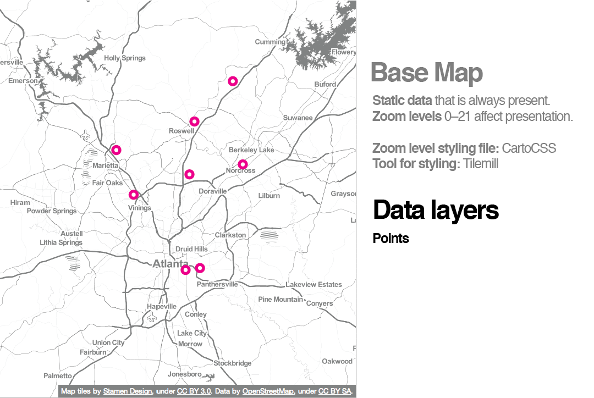

Super fast crash-tour of...
Leaflet!
(Taking a page outta maptime boston's
book)
quick review
 Anatomy of Web Map
Anatomy of Web Map {.js}
* grabs the tiles
* adds content layer
* handles interaction
leaflet.js
What is leaflet.js for?
"slippy" maps with tiled base layers
What does leaflet.js do?
handles basic tasks like converting data to map layers
panning and zooming and mouse interactions
What Leaflet does not do?
Provide any data. It's up to you to provide map data, including a basemap
Why do you like it so much?
Extremely lightweight — around 34 KB of gzipped JS code
No external dependencies
works well across most types of devices
open source
easy to extend with plugins
Geoprocessing
Routing
Geocoding
Dynamic data loading
Time. Elevation. Search.
So here's how you use it!
The simplest map needs:
leaflet CSS styles
leaflet.js library
div element to hold the map
height style specified for the map div
short script to create the map in that div
Remember tiles?
http://tile.openstreetmap.org/4/2/6.png
-- tile server.
http://tile.openstreetmap.org/4/2/6.png
-- zoom level.
http://tile.openstreetmap.org/4/2/6.png
-- place in the grid where the tile lives.
Leaflet uses p-much any map
tile providerSometimes maps use multiple tile layers at once!
Just pile on additional layers the same way as the first one.
MOAR LAYERZ!
features

use jQuery's getJSON() method to load the data file
pass:
a) path to geodata file
b) a callback
we use L.geoJson() to create a vector layer from GeoJSON
again using addTo() to put the layer on the map
Did you know? leaflet supports default and custom markers
Why would we want custom markers?
pretty
also
RATS
L.icon() to define the icon we're going to use for the rodent points
iconUrl is the path to the image file
iconSize is a two-number array of the pixel width and height of the icon
L.geoJson has been passed an options object, a pointToLayer function
accepts two arguments: the GeoJSON feature, and a LatLng object representing its location
What about interaction?
don't worry, leaflet's got this
before returning the Marker in pointToLayer use bindPopup() method to enable the popup on click
DONE
Polygon and line GeoJSON data is added in the same basic way as points.
(In fact, all three could be loaded from a single GeoJSON file.)
We just repeat the step from a few examples back, using neighborhoods.geojson this time
but.. but.. two asynchronous $.getJSON requests??
we don't want rodents drawing first, underneath the neighborhoods
Leaflet is clever: the map consists of several panes
paths will always be drawn in overlay pane
cool. now let's turn these paths into a choropleth layer
Remember colorbrewer?
we now pass an options object to the neighborhoods GeoJSON layer
a style function and
onEachFeature() which uses
bindPopup()
Combining style with onEachFeature accomplishes something similar to what pointToLayer did for the rodents
style provides some instructions for how to turn the GeoJSON feature into a map layer
and onEachFeature provides some instructions for what to do with that layer
Utilize plug-ins!
You can figure it out.
Go get'em Tiger!
Special thanks to Maptime Boston!
Presentation made with
big